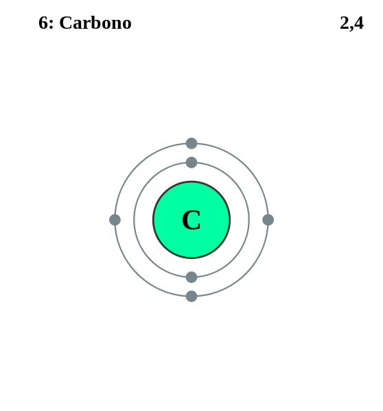

|
|
|||||
|
Es el más ligero de todos los metales,no se encuentra en estado libre en la naturaleza, sino combinado en todas las rocas ígneas, manantiales minerales y en los minerales lepidolita, espodumena, petalita y ambligonita. |
 |
DATOS Número Atómico: 6 Peso Atómico: 6.941 Electronegatividad: 0.98 Configuración Electrónica: [He]2s1 Estados de Oxidación: +1 No. de Electrones de Valencia: 1 |
|||